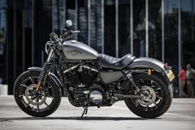
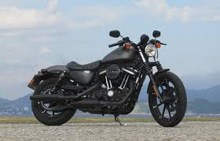

Sportster883
| Marca |
Modelo |
Ano |
Preço |
Oleo |
| Harley-Davidson |
Sportster 883 |
1986–2022 |
R$60.965,00 |
SAE 20W50 |
- Curiosidade 1: Ela usa o clássico motor 883 cc Evolution arrefecido a ar, e a própria Harley destaca que ele é rubber-mounted, ou seja, montado com coxins para reduzir vibração.
- Curiosidade 2: O banco “tuck and roll” foi descrito pela Harley como inspirado nos bobbers antigos, e o guidão drag-style vem da estética das motos de arrancada.
- Curiosidade 3: Em 2022, a documentação oficial da Harley mostra que havia unidades CKD com montagem em Manaus, Brasil, identificadas pelo código de planta “D” no VIN.
- Curiosidade 4: Torque: 7,60 kgf.m a 3500 rpm

